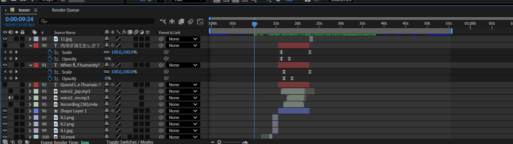

Début 2026, j'ai collaboré avec cinq camarades à la création d'une exposition immersive dédiée aux mangas cultes Akira et Ghost in the Shell. Au sein de ce projet, nous avons conçu l'identité visuelle, le site web ainsi que toute la stratégie de communication. En mars 2026, j'ai coréalisé avec une camarade le teaser en motion design.
L'immersion constituait le cœur de notre projet. Afin de répondre aux attentes de nos cibles (les 16-25 ans et les 40-50 ans), nous avons misé sur un teaser dynamique et percutant.
La production a commencé par un travail de recherche sonore : j'ai fusionné deux compositions pour créer une identité audio sur mesure. Après une sélection iconographique conjointe, nous avons segmenté la réalisation du teaser. En phase finale, j'ai pris en charge le montage ainsi que la post-production vocale. Pour souligner l'esthétique du projet, j'ai ajouté des effets aux voix off et les ai réalisé une version anglaise et japonaise.
